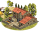
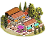
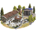
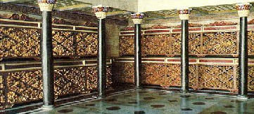
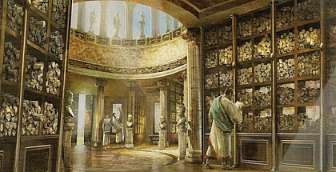
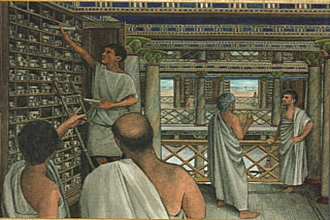

RTR: Imperium Surrectum
RTR: Imperium SurrectumSmall School (Civic) chain
6 levels, each replacing the one before it — you upgrade in place rather than building alongside.
Small School (Civic) → Academy (Civic) → Great Academy (Civic) → Mouseion and the Great Library → Library of Pergamum → Plato's Academy
Pictures are the game's own building art. Where a culture ships none of its own, the game falls back to another culture's, and that is what is shown here.
Levels at a glance
| Level | Cost | Build time | Minimum settlement | Upgrades to | Level | Cost | Build time | Minimum settlement | Upgrades to | ||
|---|---|---|---|---|---|---|---|---|---|---|---|
| Small School (Civic) | 4,000 | 4 | city | Academy (Civic) |  | Academy (Civic) | 8,000 | 6 | large city | Great Academy (Civic) | |
| Great Academy (Civic) | 12,000 | 8 | huge city | — | Mouseion and the Great Library | 14,000 | 5 | city | — | ||
 | Library of Pergamum | 12,000 | 5 | city | — |  | Plato's Academy | 10,000 | 5 | city | — |
Costs in denarii, build time in turns.
Academy (Civic)

A Scriptorium holds many laboriously copied books, and the learning to be gained here can improve the skills of present and future leaders alike. Built upon the solid educational foundations of an Academy, this place brings together many teachers and thinkers who, through cogent argument and disputation, impart knowledge to all those willing to listen and learn.
History
Elite youths would go on to a higher level of education, under the Rhetor, who would teach them how to compose and deliver oratory, alongside a more general curriculum. Initially this can be seen in the practice of youths following around a prominent orator and politician in his daily actions.
More commonly, especially in the late Republic, a young man would be educated more formally. One exercise involved the composition of speeches to either persuade an audience to adopt a course of action (suasoria), or to address a particular point of law (controversia). Suasoriae were often based on historical or mythological events: eg. Should Agamemnon sacrifice Iphigenia at Aulis? Should Cicero beg M. Antonius for mercy, having been sentenced to death? (Sen. Mai. Suas. 3, 6). Controversiae usually involved a strict recounting of the specific details in a given case.
Oratory was immensely important for a member of the elite. Not only would he be expected to engage in public debate in the Senate, but he would also be called upon to assist his friends and clients in legal disputes. In order to match the achievements of his ancestors, he would need to persuade the assembled populace to elect him as a magistrate. In addition to the content, the audience would observe the adherence of a man to the principles of rhetorical delivery: his expression, his movements and the variety of his voice. To be successful politically, a man would need not only an extensive knowledge of law, historical and mythological exempla, and precedents, but also a persuasive demeanour and a strong voice.
Wording varies by culture: 9 versions of this description exist in the game files.
| Cost | 8,000 denarii | Build time | 6 turns | Minimum settlement | large city | Upgrades to | Great Academy (Civic) |
What it does
- taxable income -10 to -6, scaling with settlement size (player only)
Show 14 effects that apply only in the circumstances shown
- +1 public order (law) — only when
paper_resource - allows recruiting Diplomats — only when
factions { carthaginian, indian, egyptian, iberian, libyan, eastern, arab, ethiopian, anatolian, iranian, greek, w_hellenistic, e_hellenistic, roman, } and requires_gov and is_player - up to 1 Diplomat can be recruited in this settlement — only when
factions { carthaginian, indian, egyptian, iberian, libyan, eastern, arab, ethiopian, anatolian, iranian, greek, w_hellenistic, e_hellenistic, roman, } and is_player and not hidden_resource capital - up to 4 Diplomats can be recruited in this settlement — only when
factions { carthaginian, indian, egyptian, iberian, libyan, eastern, arab, ethiopian, anatolian, iranian, greek, w_hellenistic, e_hellenistic, roman, } and is_player and hidden_resource capital - -6 taxable income — only when
size1 and building_present_min_level academic scriptorium and not is_player - -6 taxable income — only when
size2 and building_present_min_level academic scriptorium and not is_player - -7 taxable income — only when
size3 and building_present_min_level academic scriptorium and not is_player - -7 taxable income — only when
size4 and building_present_min_level academic scriptorium and not is_player - -8 taxable income — only when
size5 and building_present_min_level academic scriptorium and not is_player - -8 taxable income — only when
size6 and building_present_min_level academic scriptorium and not is_player - -9 taxable income — only when
size7 and building_present_min_level academic scriptorium and not is_player - -9 taxable income — only when
size8 and building_present_min_level academic scriptorium and not is_player - -10 taxable income — only when
size9 and building_present_min_level academic scriptorium and not is_player - -10 taxable income — only when
size10 and building_present_min_level academic scriptorium and not is_player
Religious belief — spreads 28 beliefs, by how much depending on what the region already believes.
Show the 28 beliefs
- Aeolian +2
- Arab +2
- Arcadian +2
- Armenian +2
- Assyrian +2
- Bosporan +2
- Cappadocian +2
- Carian +2
- Cilician +2
- Dorian +2
- Egyptian +2
- Epirote +2
- Ethiopian +2
- Greco-Bactrian +2
- Iberian +2
- Indian +2
- Ionian +2
- Iranian +2
- Italic +2
- Judaean +2
- Libyan +2
- Lycian +2
- Macedonian +2
- Mesopotamian +2
- Northwest Greek +2
- Paphlagonian +2
- Phoenician +2
- Pisidian +2
Mouseion and the Great Library

The Royal Library of Alexandria, the largest library of the ancient world, was built during the reign of Ptolemy II of Egypt. The Library was likely created after his father had built what would become the first part of the Library complex, the temple of the Muses - the Mouseion, the home of music or poetry, a philosophical school and library like Plato's school of philosophy, also a gallery of sacred texts. The Latin word museum is derived from this. Initially the Library was closely linked to a "museum," or research center, that seems to have focused primarily on editing texts. Libraries were important for textual research in the ancient world, since the same text often existed in several different versions of varying quality and veracity. The editors at the Library of Alexandria are especially well known for their work on Homeric texts. All visitors to Alexandria were required to surrender all books, scrolls as well as any form of written media in their possession which were listed under the heading "books of the ships"; these writings were then swiftly copied by official scribes. Sometimes the copies were so precise that the originals were put into the Library, and the copies were delivered to the unsuspecting previous owners.
This building complex can be improved as the settlement grows in size and importance.
| Cost | 14,000 denarii | Build time | 5 turns | Minimum settlement | city |
What it does
- +3 public order (law)
- +1 trade income
- +1 population health
- -12 taxable income (player only)
Show 4 effects that apply only in the circumstances shown
- allows recruiting Diplomats — only when
factions { carthaginian, indian, egyptian, iberian, libyan, eastern, arab, ethiopian, anatolian, iranian, greek, w_hellenistic, e_hellenistic, roman, } and requires_gov and is_player - up to 1 Diplomat can be recruited in this settlement — only when
factions { carthaginian, indian, egyptian, iberian, libyan, eastern, arab, ethiopian, anatolian, iranian, greek, w_hellenistic, e_hellenistic, roman, } and is_player and not hidden_resource capital - up to 4 Diplomats can be recruited in this settlement — only when
factions { carthaginian, indian, egyptian, iberian, libyan, eastern, arab, ethiopian, anatolian, iranian, greek, w_hellenistic, e_hellenistic, roman, } and is_player and hidden_resource capital - -12 taxable income — only when
building_present_min_level academic ludus_magnus and not is_player
Religious belief — spreads 1 belief, by how much depending on what the region already believes.
- Macedonian +3
Library of Pergamum

Pergamum was home to a library said to house approximately 200,000 volumes, according to the writings of Plutarch. Built by Eumenes II and situated at the northern end of the Acropolis, it became one of the most important ancient libraries. Historical accounts claim that the library possessed a large main reading room, lined with many shelves. An empty space was left between the outer walls and the shelves to allow for air circulation. This was intended to prevent the library from becoming overly humid in the warm climate of Anatolia and can be seen as an early attempt at library preservation. Manuscripts were written on parchment, rolled, and then stored on these shelves. A statue of Athena, the goddess of wisdom, stood in the main reading room. Pergamum is credited with being the home and namesake of parchment (charta pergamena). Prior to the creation of parchment, manuscripts were transcribed on papyrus, which was produced only in Alexandria. When the Ptolemies of Egypt refused to export any more papyrus to Pergamum, King Eumenes II commanded that an alternative source be found. This led to the production of parchment, which is made out of a thin sheet of sheep or goat skin. Parchment reduced the Roman Empire's dependency on Egyptian papyrus and allowed for the increased dissemination of knowledge throughout Europe and Asia. The introduction of parchment also greatly expanded the holdings of the Library of Pergamum.
| Cost | 12,000 denarii | Build time | 5 turns | Minimum settlement | city |
What it does
- taxable income -14 to -10, scaling with settlement size (player only)
Show 15 effects that apply only in the circumstances shown
- +3 public order (law) — only when
paper_resource - +1 public order (law) — only when
not paper_resource - allows recruiting Diplomats — only when
factions { carthaginian, indian, egyptian, iberian, libyan, eastern, arab, ethiopian, anatolian, iranian, greek, w_hellenistic, e_hellenistic, roman, } and requires_gov and is_player - up to 1 Diplomat can be recruited in this settlement — only when
factions { carthaginian, indian, egyptian, iberian, libyan, eastern, arab, ethiopian, anatolian, iranian, greek, w_hellenistic, e_hellenistic, roman, } and is_player and not hidden_resource capital - up to 4 Diplomats can be recruited in this settlement — only when
factions { carthaginian, indian, egyptian, iberian, libyan, eastern, arab, ethiopian, anatolian, iranian, greek, w_hellenistic, e_hellenistic, roman, } and is_player and hidden_resource capital - -10 taxable income — only when
size1 and building_present_min_level academic ludus_magnus and not is_player - -10 taxable income — only when
size2 and building_present_min_level academic ludus_magnus and not is_player - -11 taxable income — only when
size3 and building_present_min_level academic ludus_magnus and not is_player - -11 taxable income — only when
size4 and building_present_min_level academic ludus_magnus and not is_player - -12 taxable income — only when
size5 and building_present_min_level academic ludus_magnus and not is_player - -12 taxable income — only when
size6 and building_present_min_level academic ludus_magnus and not is_player - -13 taxable income — only when
size7 and building_present_min_level academic ludus_magnus and not is_player - -13 taxable income — only when
size8 and building_present_min_level academic ludus_magnus and not is_player - -14 taxable income — only when
size9 and building_present_min_level academic ludus_magnus and not is_player - -14 taxable income — only when
size10 and building_present_min_level academic ludus_magnus and not is_player
Religious belief — spreads 1 belief, by how much depending on what the region already believes.
- Macedonian +2
Small School (Civic)

Staying in a settlement with an educational institution can have positive effects on the trait and ancillaries your characters receive.
The Ludus is a training school where leaders can acquire the basic skills of government before they assume the weighty responsibilities of command. Teaching ranges from the purely philosophical to the practical skills of waging war and producing good governance.
Towns with an Academy will tend to be well run because of the pool of educated men that is produced.
An Academy can be upgraded as the settlement grows. History
Roman education began in the home: Quintilian recommended that the parents begin teaching basic literacy and numeracy skills early in life (Quint. Inst. Or. 1.1.8). Traditionally Romans were educated within their own home, by the parents, but as the city came to be exposed to Hellenistic ideals, it became more common for specialised teachers to be employed. Initially, the practical skills of reading, writing and mathematics dominated, while social 'mores' were discussed through heroic examples. The example, given by Plutarch, of Cato the Elder, who taught his own son personally, while possibly apocryphal, is also instructive. The biography claims that in addition to teaching basic skills, he wrote his 'origines' a history of the Italian peoples, so that his son might learn the mos maiorum (Plut. Cat. Mai. 20.7).
More generally, an elite child would be given over a paedagogus at the age of seven, to tutor them more fully in a curriculum of myths, poetry and laws. Those families who could not afford a private tutor would send their children to a school run by a magister, or litterator (Hor. Ep. 2.3.325-330; Petron. Sat. 58.7).
Later, at the age of ten or eleven, a male child was despatched to a Grammaticus, who would teach a youth to speak and write in a more refined manner, as well as how to analyse and compose poetry.
Wording varies by culture: 7 versions of this description exist in the game files.
| Cost | 4,000 denarii | Build time | 4 turns | Minimum settlement | city | Upgrades to | Academy (Civic) |
What it does
- taxable income -7 to -3, scaling with settlement size (player only)
Show 13 effects that apply only in the circumstances shown
- allows recruiting Diplomats — only when
factions { carthaginian, indian, egyptian, iberian, libyan, eastern, arab, ethiopian, anatolian, iranian, greek, w_hellenistic, e_hellenistic, roman, } and requires_gov and is_player - up to 1 Diplomat can be recruited in this settlement — only when
factions { carthaginian, indian, egyptian, iberian, libyan, eastern, arab, ethiopian, anatolian, iranian, greek, w_hellenistic, e_hellenistic, roman, } and is_player and not hidden_resource capital - up to 4 Diplomats can be recruited in this settlement — only when
factions { carthaginian, indian, egyptian, iberian, libyan, eastern, arab, ethiopian, anatolian, iranian, greek, w_hellenistic, e_hellenistic, roman, } and is_player and hidden_resource capital - -3 taxable income — only when
size1 and building_present_min_level academic academy and not is_player - -3 taxable income — only when
size2 and building_present_min_level academic academy and not is_player - -4 taxable income — only when
size3 and building_present_min_level academic academy and not is_player - -4 taxable income — only when
size4 and building_present_min_level academic academy and not is_player - -5 taxable income — only when
size5 and building_present_min_level academic academy and not is_player - -5 taxable income — only when
size6 and building_present_min_level academic academy and not is_player - -6 taxable income — only when
size7 and building_present_min_level academic academy and not is_player - -6 taxable income — only when
size8 and building_present_min_level academic academy and not is_player - -7 taxable income — only when
size9 and building_present_min_level academic academy and not is_player - -7 taxable income — only when
size10 and building_present_min_level academic academy and not is_player
Religious belief — spreads 28 beliefs, by how much depending on what the region already believes.
Show the 28 beliefs
- Aeolian +1
- Arab +1
- Arcadian +1
- Armenian +1
- Assyrian +1
- Bosporan +1
- Cappadocian +1
- Carian +1
- Cilician +1
- Dorian +1
- Egyptian +1
- Epirote +1
- Ethiopian +1
- Greco-Bactrian +1
- Iberian +1
- Indian +1
- Ionian +1
- Iranian +1
- Italic +1
- Judaean +1
- Libyan +1
- Lycian +1
- Macedonian +1
- Mesopotamian +1
- Northwest Greek +1
- Paphlagonian +1
- Phoenician +1
- Pisidian +1
Great Academy (Civic)

This province has become a centre for learning and philosophical debate; and intelligent and tolerant man might learn much here.
The Academia attracts wise teachers, keen to pass on their learning to all potential leaders who know that greatness is found in the mind as well as the sword-arm. This kind of educational establishment is only found in the largest cities of an empire and represents the very finest training ground for the ruling elite. Individuals trained here will gain a solid understanding of all human wisdom, including the arts of war, statesmanship and good government. A great city with a Ludus Magna will tend to be superbly run because of the talented and educated men that can always be found here.
History
By the Late Republic, it became more fashionable for important men to associate with Philosophers. Greek philosophers joined the entourage of famous Romans. Panaetius, later head of the Stoa, was well acquainted with P. Cornelius Scipio Aemilianus in Rome during the 140s. Cato the Younger housed a number of Stoic philosophers at his own expense.
The strong influence of Hellenistic philosophy on Roman literature emphasises a strong tradition of higher education. The epic poem de rerum natura by T. Lucretius Carus is a notable example of Epicurean philosophy. Cicero's philosophical works incorporate aspects of several schools, synthesising Hellenistic ideas in a more Roman fashion. Q. Sextius founded a philosophical school whose tenets were described as 'Greek in words, but Roman in character.'
By the Late Republic, the sons of prominent men would often explore the Greek East, studying in academic locations such as Athens or Rhodes. Cicero studied under numerous scholars, including Apollonius of Rhodes. His son went to Athens, studying under Cratippus, the head of the Peripatetic school.
Wording varies by culture: 5 versions of this description exist in the game files.
| Cost | 12,000 denarii | Build time | 8 turns | Minimum settlement | huge city |
What it does
- taxable income -14 to -10, scaling with settlement size (player only)
Show 14 effects that apply only in the circumstances shown
- +2 public order (law) — only when
paper_resource - allows recruiting Diplomats — only when
factions { carthaginian, indian, egyptian, iberian, libyan, eastern, arab, ethiopian, anatolian, iranian, greek, w_hellenistic, e_hellenistic, roman, } and requires_gov and is_player - up to 2 Diplomats can be recruited in this settlement — only when
factions { carthaginian, indian, egyptian, iberian, libyan, eastern, arab, ethiopian, anatolian, iranian, greek, w_hellenistic, e_hellenistic, roman, } and is_player and not hidden_resource capital - up to 5 Diplomats can be recruited in this settlement — only when
factions { carthaginian, indian, egyptian, iberian, libyan, eastern, arab, ethiopian, anatolian, iranian, greek, w_hellenistic, e_hellenistic, roman, } and is_player and hidden_resource capital - -10 taxable income — only when
size1 and building_present_min_level academic ludus_magnus and not is_player - -10 taxable income — only when
size2 and building_present_min_level academic ludus_magnus and not is_player - -11 taxable income — only when
size3 and building_present_min_level academic ludus_magnus and not is_player - -11 taxable income — only when
size4 and building_present_min_level academic ludus_magnus and not is_player - -12 taxable income — only when
size5 and building_present_min_level academic ludus_magnus and not is_player - -12 taxable income — only when
size6 and building_present_min_level academic ludus_magnus and not is_player - -13 taxable income — only when
size7 and building_present_min_level academic ludus_magnus and not is_player - -13 taxable income — only when
size8 and building_present_min_level academic ludus_magnus and not is_player - -14 taxable income — only when
size9 and building_present_min_level academic ludus_magnus and not is_player - -14 taxable income — only when
size10 and building_present_min_level academic ludus_magnus and not is_player
Religious belief — spreads 28 beliefs, by how much depending on what the region already believes.
Show the 28 beliefs
- Aeolian +3
- Arab +3
- Arcadian +3
- Armenian +3
- Assyrian +3
- Bosporan +3
- Cappadocian +3
- Carian +3
- Cilician +3
- Dorian +3
- Egyptian +3
- Epirote +3
- Ethiopian +3
- Greco-Bactrian +3
- Iberian +3
- Indian +3
- Ionian +3
- Iranian +3
- Italic +3
- Judaean +3
- Libyan +3
- Lycian +3
- Macedonian +3
- Mesopotamian +3
- Northwest Greek +3
- Paphlagonian +3
- Phoenician +3
- Pisidian +3
Plato's Academy

The Academy was founded by Plato in ca. 385 BC in Athens. It persisted throughout the Hellenistic period as a sceptical school. The site was located near Colonus, 6 stadia (1 mile) from the Dipylon gates. Before being a school, the Academy contained a sacred grove of olive trees dedicated to Athena, the goddess of wisdom. The archaic name Hekademia evolved into Academy, linked to the Athenian hero "Akademos".
At the time of Plato, the academy was a beautiful park for gymnastics. Within this park Plato opened a school for those inclined to attend his instructions. The Academy was not a school teaching an orthodox doctrine, or an association of members expected to subscribe to the theory of ideas. The formal instruction was restricted to mathematics. Plato's influence was that of an intelligent critic of method, not a technical mathematician. By his criticism of method, his formulation of broader problems, and arousing interest in mathematics among philosophers, he gave a great impulse to the development of the science.
The Head of the Academy was elected for life by a majority vote. The first few to lead were: Plato, Speuisppus, Xenocrates, Polemon, Crates and Crantor. Aristotle was a member for many years but never became its Head.
This building complex can be improved as the settlement grows in size and importance.
| Cost | 10,000 denarii | Build time | 5 turns | Minimum settlement | city |
What it does
- -8 taxable income (player only)
Show 6 effects that apply only in the circumstances shown
- +3 public order (law) — only when
paper_resource - +1 public order (law) — only when
not paper_resource - allows recruiting Diplomats — only when
factions { carthaginian, indian, egyptian, iberian, libyan, eastern, arab, ethiopian, anatolian, iranian, greek, w_hellenistic, e_hellenistic, roman, } and requires_gov and is_player - up to 1 Diplomat can be recruited in this settlement — only when
factions { carthaginian, indian, egyptian, iberian, libyan, eastern, arab, ethiopian, anatolian, iranian, greek, w_hellenistic, e_hellenistic, roman, } and is_player and not hidden_resource capital - up to 4 Diplomats can be recruited in this settlement — only when
factions { carthaginian, indian, egyptian, iberian, libyan, eastern, arab, ethiopian, anatolian, iranian, greek, w_hellenistic, e_hellenistic, roman, } and is_player and hidden_resource capital - -8 taxable income — only when
building_present_min_level academic ludus_magnus and not is_player
Religious belief — spreads 1 belief, by how much depending on what the region already believes.
- Ionian +3
What the shorthands in those conditions stand for (12)
These are the mod's own, quoted from the game files unchanged.
| Shorthand | Stands for | Shorthand | Stands for | Shorthand | Stands for | Shorthand | Stands for |
|---|---|---|---|---|---|---|---|
paper_resource | resource papyrus or hidden_resource papyrus_supply_built factionwide or hidden_resource hides_supply_built factionwide | requires_gov | building_present governmentA or building_present governmentB or building_present governmentC or building_present governmentD or not is_player | size1 | major_event "empire_size1" | size10 | major_event "empire_size10" |
size2 | major_event "empire_size2" | size3 | major_event "empire_size3" | size4 | major_event "empire_size4" | size5 | major_event "empire_size5" |
size6 | major_event "empire_size6" | size7 | major_event "empire_size7" | size8 | major_event "empire_size8" | size9 | major_event "empire_size9" |